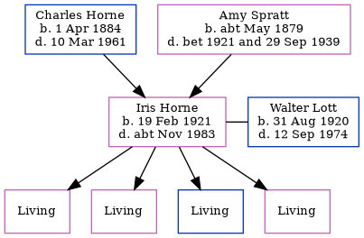

Iris Joan Lott (née Horne) 1921 - c1983
[ Home ] | [ Calendar ] | [ Surnames Index ] | [ Errors ] | [ Family History ]A probationer nurse in training and the child of Charles Horne (a market gardener worker) and Amy Spratt, Iris Horne, the first cousin once-removed on the father's side of Nigel Horne, was born in St Peters, Thanet, Kent, England on 19 Feb 19211,2,3,4,5 and. She married Walter Lott (a newsagent with whom she had 4 surviving children Maureen E, Susan J, Robert J and Margaret A) in Thanet, Kent, England around Aug 19436.
During her life, she was living at Sackettshill Farm in Thanet on 19 Jun 19211; at Isle Of Thanet Joint Isolation Hospital, Haine, Ramsgate, Kent on 29 Sept 19398; and at 18 Malmains Road, Dover, Kent in 19747.
She died c. Nov 1983 in Shepway, Kent, England3,5.
Parents
- Charles Henry was born on 1 Apr 1884
- Amy was born c. May 1879
Citations
- 1921 Census Of England & Wales - Findmypast (was age - and the daughter of the head of the household)
- England & Wales births 1837-2006 - Findmypast
- England & Wales deaths 1837-2007 - Findmypast
- England & Wales, Birth Index: 1916-2005 Online publication - Provo, UT, USA: The Generations Network, Inc., 2008.Original data - General Register Office. England and Wales Civil Registration Indexes. London, England: General Register Office. © Crown copyright. Published by permission of the Cont
- England & Wales, Death Index: 1984-2005 Online publication - Provo, UT, USA: The Generations Network, Inc., 2007.Original data - General Register Office. England and Wales Civil Registration Indexes. London, England: General Register Office. © Crown copyright. Published by permission of the Cont
- England & Wales, Marriage Index: 1916-2005 Online publication - Provo, UT, USA: The Generations Network, Inc., 2009.Original data - General Register Office. England and Wales Civil Registration Indexes. London, England: General Register Office. © Crown copyright. Published by permission of the Cont
- From her husband's probate notice
- 1939 Register - Findmypast (was recorded at this address)
Media
England & Wales births 1837-2006 - BMD/B/1921/1/AZ/000714/070
England & Wales marriages 1837-2008 - BMD/M/1943/3/AZ/000575/146
1939 Register Transcription - TNA-R39-1768-1768H-009-06
England & Wales deaths 1837-2007 - BMD/D/1983/4/AZ/000574/127
Family Tree
Map
Generated by ged2site. Last updated on Jul 3, 2024